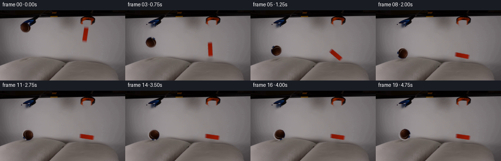
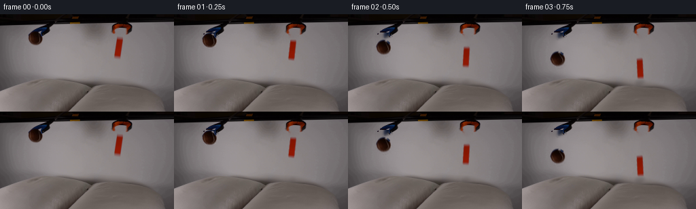
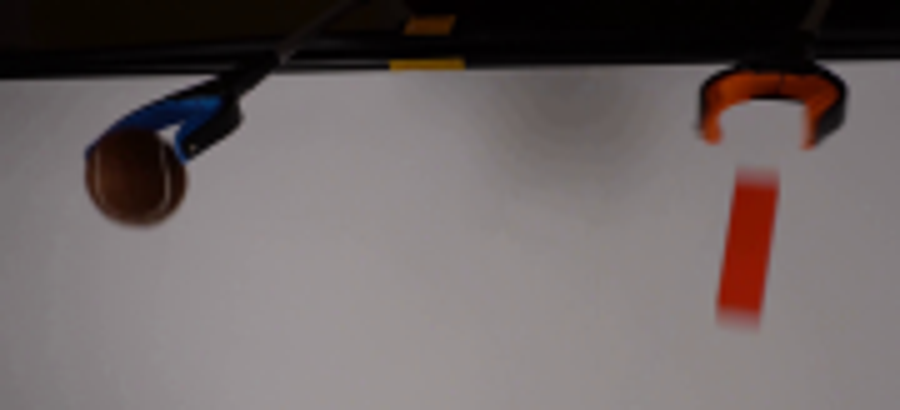
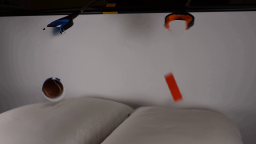
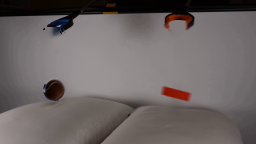
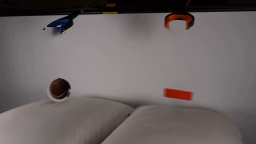

CODING AGENTS AS PIXEL WORLD MODELS
traex/GPT-5.6-Sol · 0003
点击播放 · 原生 RGB 像素
逐轮保存的候选
回放视频、检查图与代码变化。
每份候选均可单独播放。实际图片检查记录在下方工具轨迹中。
候选 01播放与检查图
点击播放 · 原生 RGB 像素


展开代码变化
--- 上一保存版本
+++ 本次保存版本
@@ -0,0 +1,155 @@
+from pathlib import Path
+import cv2
+import numpy as np
+from PIL import Image
+import artifact_io
+
+CASE = Path(__file__).resolve().parent
+W, H = 256, 144
+src = np.asarray(Image.open(CASE / 'first_frame.png').convert('RGB'), dtype=np.uint8)
+
+# Build a clean locked-off plate by removing only the two released articles.
+bgr = cv2.cvtColor(src, cv2.COLOR_RGB2BGR)
+mask = np.zeros((H, W), np.uint8)
+cv2.ellipse(mask, (52, 36), (12, 13), 0, 0, 360, 255, -1)
+# Slightly tilted orange block and its soft optical fringe.
+box = cv2.boxPoints(((173.5, 49.0), (13.0, 35.0), 8.0)).astype(np.int32)
+cv2.fillConvexPoly(mask, box, 255)
+mask = cv2.dilate(mask, np.ones((3,3), np.uint8), iterations=1)
+plate = cv2.cvtColor(cv2.inpaint(bgr, mask, 5, cv2.INPAINT_TELEA), cv2.COLOR_BGR2RGB)
+
+# Restore the visible portions of the blue grabber which sit just behind the ball.
+# These pixels are selected by their blue chroma, rather than restoring any brown ball pixels.
+y0,y1,x0,x1 = 18,38,43,76
+patch = src[y0:y1,x0:x1]
+mx = patch.max(axis=2); mn = patch.min(axis=2)
+blue_tool = ((patch[:,:,2] > patch[:,:,0] + 8) & (mx-mn > 12))
+blue_tool = cv2.dilate(blue_tool.astype(np.uint8), np.ones((2,2),np.uint8), 1).astype(bool)
+plate[y0:y1,x0:x1][blue_tool] = patch[blue_tool]
+
+# Extract soft-edged sprites directly from the supplied photograph, preserving its lighting/texture.
+def ball_sprite():
+ x0,y0,x1,y1 = 38,21,67,52
+ rgb = src[y0:y1,x0:x1].copy()
+ yy,xx = np.mgrid[:y1-y0,:x1-x0]
+ # Ball silhouette is nearly round, with a tiny flattening where the claw holds it.
+ rr = np.sqrt(((xx-14.0)/11.4)**2 + ((yy-15.0)/12.0)**2)
+ a = np.clip((1.06-rr)/0.09,0,1)
+ return rgb, a.astype(np.float32), (14.0,15.0)
+
+def block_sprite():
+ x0,y0,x1,y1 = 161,28,186,70
+ rgb = src[y0:y1,x0:x1].copy()
+ h,w = rgb.shape[:2]
+ # A geometric mask matching the photographed, slightly left-leaning block.
+ m = np.zeros((h,w),np.uint8)
+ poly=np.array([[10,4],[20,5],[16,37],[6,36]],np.int32)
+ cv2.fillConvexPoly(m,poly,255)
+ m=cv2.GaussianBlur(m,(5,5),0.85)
+ # Restrict pale fringe to pixels whose red/orange chroma identifies the article.
+ chrom = rgb[:,:,0].astype(float)-0.58*rgb[:,:,1]-0.42*rgb[:,:,2]
+ chrom_a=np.clip((chrom-17)/42,0,1)
+ a=(m.astype(float)/255.0)*np.clip(chrom_a*1.7,0,1)
+ a=cv2.GaussianBlur(a.astype(np.float32),(3,3),0.45)
+ return rgb,a,(13.0,21.0)
+
+BALL = ball_sprite(); BLOCK = block_sprite()
+
+def warp_sprite(sprite, center, angle=0.0, scale=1.0, blur_motion=0.0):
+ rgb,a,c = sprite
+ # Premultiplication keeps the transformed soft boundary free of dark halos.
+ pm=rgb.astype(np.float32)*a[:,:,None]
+ M=cv2.getRotationMatrix2D(c, angle, scale)
+ M[0,2] += center[0]-c[0]
+ M[1,2] += center[1]-c[1]
+ wa=cv2.warpAffine(a,M,(W,H),flags=cv2.INTER_CUBIC,borderMode=cv2.BORDER_CONSTANT,borderValue=0)
+ wp=cv2.warpAffine(pm,M,(W,H),flags=cv2.INTER_CUBIC,borderMode=cv2.BORDER_CONSTANT,borderValue=0)
+ wa=np.clip(wa,0,1)
+ if blur_motion>0:
+ k=max(3,int(round(blur_motion*4))|1)
+ wa=cv2.GaussianBlur(wa,(1,k),blur_motion)
+ wp=cv2.GaussianBlur(wp,(1,k),blur_motion)
+ fg=np.zeros_like(wp)
+ good=wa>1e-4
+ fg[good]=wp[good]/wa[good,None]
+ return np.clip(fg,0,255),wa
+
+def composite(img, fg, a):
+ return img*(1-a[:,:,None])+fg*a[:,:,None]
+
+def displaced_plate(dents):
+ """Locally push pillow texture down to make soft, physical-looking depressions."""
+ yy,xx=np.mgrid[:H,:W].astype(np.float32)
+ disp=np.zeros((H,W),np.float32)
+ for cx,amount,width in dents:
+ lateral=np.exp(-0.5*((xx-cx)/width)**2)
+ vertical=np.exp(-0.5*((yy-101)/17.0)**2)
+ gate=np.clip((yy-86)/10,0,1)
+ disp += amount*lateral*vertical*gate
+ mapx=xx
+ mapy=yy-disp
+ out=cv2.remap(plate,mapx,mapy,cv2.INTER_LINEAR,borderMode=cv2.BORDER_REPLICATE)
+ return out.astype(np.float32)
+
+def add_shadow(img, cx, cy, rx, ry, opacity, angle=0):
+ layer=np.zeros((H,W),np.float32)
+ cv2.ellipse(layer,(int(round(cx)),int(round(cy))),(max(1,int(rx)),max(1,int(ry))),angle,0,360,float(opacity),-1)
+ sigma=max(1.0,rx*0.28)
+ layer=cv2.GaussianBlur(layer,(0,0),sigma)
+ # neutral, soft contact shadows sampled against the existing pillow lighting
+ return img*(1-layer[:,:,None])
+
+# Hand-tuned trajectories sampled at the required constant 4 fps. Free-fall is parabolic;
+# impacts on the soft pillows are under-damped and settle naturally.
+ball_xy=[(52,36),(52.2,39.4),(52.5,49.7),(52.9,66.8),(53.3,89.0),
+ (53.8,81.8),(54.3,82.0),(54.8,88.7),(55.3,86.9),(55.8,89.2),
+ (56.2,89.0),(56.6,89.1),(57.0,89.2),(57.3,89.3),(57.5,89.3),
+ (57.7,89.4),(57.9,89.4),(58.0,89.4),(58.1,89.4),(58.2,89.4)]
+# Additional rotation of the already tilted photographed block.
+block_xy=[(173.5,49.0),(173.5,52.4),(173.4,62.7),(173.2,79.8),(173.0,87.3),
+ (174.0,91.2),(175.0,91.7),(175.7,93.5),(176.1,92.6),(176.5,94.0),
+ (176.8,93.7),(177.0,94.1),(177.2,94.0),(177.3,94.1),(177.4,94.1),
+ (177.5,94.1),(177.6,94.1),(177.7,94.1),(177.8,94.1),(177.8,94.1)]
+block_rot=[0,2,5,11,31,58,77,84,87,89,90,90,90,90,90,90,90,90,90,90]
+
+frames=[]
+for i in range(20):
+ if i==0:
+ frames.append(src.copy())
+ continue
+ # Deformation follows load: strongest at first impact and then retained under resting objects.
+ bdent=[0,0,0,0,4.4,1.0,0.7,3.2,1.4,2.5,2.2,2.2,2.2,2.2,2.2,2.2,2.2,2.2,2.2,2.2][i]
+ odent=[0,0,0,2.8,4.2,3.7,2.4,3.0,2.2,2.6,2.4,2.4,2.4,2.4,2.4,2.4,2.4,2.4,2.4,2.4][i]
+ img=displaced_plate([(ball_xy[i][0],bdent,17),(block_xy[i][0],odent,20)])
+
+ # Pillow shadows tighten and darken as each released object approaches contact.
+ ball_gap=max(0.0,89-ball_xy[i][1])
+ bop=0.18*np.exp(-ball_gap/23.0)+0.015
+ img=add_shadow(img,ball_xy[i][0],100,10+ball_gap*.08,3.2+ball_gap*.035,bop)
+ block_gap=max(0.0,86-block_xy[i][1])
+ oop=0.15*np.exp(-block_gap/20.0)+0.012
+ # final block lies sideways, so its contact shadow broadens with its rotation
+ theta=np.deg2rad(block_rot[i])
+ rx=5+12*abs(np.sin(theta)); ry=3.0+2*abs(np.cos(theta))
+ img=add_shadow(img,block_xy[i][0],100,rx,ry,oop,angle=-block_rot[i])
+
+ # Mild exposure-time blur only during fastest free fall.
+ bm=0.65 if i in (2,3) else 0.25 if i in (4,5) else 0
+ om=0.7 if i in (2,3,4) else 0.2 if i in (5,6) else 0
+ bfg,ba=warp_sprite(BALL,ball_xy[i],angle=(i*8 if i<5 else (32+i*14)),blur_motion=bm)
+ ofg,oa=warp_sprite(BLOCK,block_xy[i],angle=block_rot[i],blur_motion=om)
+ img=composite(img,bfg,ba)
+ img=composite(img,ofg,oa)
+
+ # At hard contact, a thin soft pillow lip overlaps the very bottom edge.
+ if bdent>2.8:
+ lip=np.zeros((H,W),np.float32)
+ cv2.ellipse(lip,(int(ball_xy[i][0]),101),(9,3),0,180,360,0.14,-1)
+ lip=cv2.GaussianBlur(lip,(0,0),1.2)
+ img=img*(1-lip[:,:,None])+displaced_plate([(ball_xy[i][0],bdent,17)]).astype(float)*lip[:,:,None]
+ frames.append(np.clip(img,0,255).astype(np.uint8))
+
+frames=np.stack(frames)
+assert frames.shape==(20,144,256,3) and frames.dtype==np.uint8
+assert np.array_equal(frames[0],src)
+artifact_io.save(frames,CASE)
可观测工具轨迹
实际执行的命令与返回图片。
命令 1exit 0
/bin/bash -lc "cat prompt.txt && printf '\\n---RULES---\\n' && cat GENERATION_RULES.md"
命令 2exit 1
/bin/bash -lc "find . -maxdepth 2 -type f -printf '%p\\n' | sort && printf '\\n---TOOLS---\\n' && command -v ffmpeg && command -v python3"
命令 3exit 0
/bin/bash -lc "python3 - <<'PY' import importlib.util for x in ['PIL','cv2','numpy','scipy']: print(x, bool(importlib.util.find_spec(x))) PY sed -n '1,240p' artifact_io.py"
命令 4exit 0
/bin/bash -lc "python3 - <<'PY'
from PIL import Image
im=Image.open('first_frame.png')
im.crop((25,0,205,82)).resize((900,410)).save('.tmp/top.png')
PY"命令 5exit 0
/bin/bash -lc "cat > generate.py <<'PY'
from pathlib import Path
import cv2
import numpy as np
from PIL import Image
import artifact_io
CASE = Path(__file__).resolve().parent
W, H = 256, 144
src = np.asarray(Image.open(CASE / 'first_frame.png').convert('RGB'), dtype=np.uint8)
# Build a clean locked-off plate by removing only the two released articles.
bgr = cv2.cvtColor(src, cv2.COLOR_RGB2BGR)
mask = np.zeros((H, W), np.uint8)
cv2.ellipse(mask, (52, 36), (12, 13), 0, 0, 360, 255, -1)
# Slightly tilted orange block and its soft optical fringe.
box = cv2.boxPoints(((173.5, 49.0), (13.0, 35.0), 8.0)).astype(np.int32)
cv2.fillConvexPoly(mask, box, 255)
mask = cv2.dilate(mask, np.ones((3,3), np.uint8), iterations=1)
plate = cv2.cvtColor(cv2.inpaint(bgr, mask, 5, cv2.INPAINT_TELEA), cv2.COLOR_BGR2RGB)
# Restore the visible portions of the blue grabber which sit just behind the ball.
# These pixels are selected by their blue chroma, rather than restoring any brown ball pixels.
y0,y1,x0,x1 = 18,38,43,76
patch = src[y0:y1,x0:x1]
mx = patch.max(axis=2); mn = patch.min(axis=2)
blue_tool = ((patch[:,:,2] > patch[:,:,0] + 8) & (mx-mn > 12))
blue_tool = cv2.dilate(blue_tool.astype(np.uint8), np.ones((2,2),np.uint8), 1).astype(bool)
plate[y0:y1,x0:x1][blue_tool] = patch[blue_tool]
# Extract soft-edged sprites directly from the supplied photograph, preserving its lighting/texture.
def ball_sprite():
x0,y0,x1,y1 = 38,21,67,52
rgb = src[y0:y1,x0:x1].copy()
yy,xx = np.mgrid[:y1-y0,:x1-x0]
# Ball silhouette is nearly round, with a tiny flattening where the claw holds it.
rr = np.sqrt(((xx-14.0)/11.4)**2 + ((yy-15.0)/12.0)**2)
a = np.clip((1.06-rr)/0.09,0,1)
return rgb, a.astype(np.float32), (14.0,15.0)
def block_sprite():
x0,y0,x1,y1 = 161,28,186,70
rgb = src[y0:y1,x0:x1].copy()
h,w = rgb.shape[:2]
# A geometric mask matching the photographed, slightly left-leaning block.
m = np.zeros((h,w),np.uint8)
poly=np.array([[10,4],[20,5],[16,37],[6,36]],np.int32)
cv2.fillConvexPoly(m,poly,255)
m=cv2.GaussianBlur(m,(5,5),0.85)
# Restrict pale fringe to pixels whose red/orange chroma identifies the article.
chrom = rgb[:,:,0].astype(float)-0.58*rgb[:,:,1]-0.42*rgb[:,:,2]
chrom_a=np.clip((chrom-17)/42,0,1)
a=(m.astype(float)/255.0)*np.clip(chrom_a*1.7,0,1)
a=cv2.GaussianBlur(a.astype(np.float32),(3,3),0.45)
return rgb,a,(13.0,21.0)
BALL = ball_sprite(); BLOCK = block_sprite()
def warp_sprite(sprite, center, angle=0.0, scale=1.0, blur_motion=0.0):
rgb,a,c = sprite
# Premultiplication keeps the transformed soft boundary free of dark halos.
pm=rgb.astype(np.float32)*a[:,:,None]
M=cv2.getRotationMatrix2D(c, angle, scale)
M[0,2] += center[0]-c[0]
M[1,2] += center[1]-c[1]
wa=cv2.warpAffine(a,M,(W,H),flags=cv2.INTER_CUBIC,borderMode=cv2.BORDER_CONSTANT,borderValue=0)
wp=cv2.warpAffine(pm,M,(W,H),flags=cv2.INTER_CUBIC,borderMode=cv2.BORDER_CONSTANT,borderValue=0)
wa=np.clip(wa,0,1)
if blur_motion>0:
k=max(3,int(round(blur_motion*4))|1)
wa=cv2.GaussianBlur(wa,(1,k),blur_motion)
wp=cv2.GaussianBlur(wp,(1,k),blur_motion)
fg=np.zeros_like(wp)
good=wa>1e-4
fg[good]=wp[good]/wa[good,None]
return np.clip(fg,0,255),wa
def composite(img, fg, a):
return img*(1-a[:,:,None])+fg*a[:,:,None]
def displaced_plate(dents):
\"\"\"Locally push pillow texture down to make soft, physical-looking depressions.\"\"\"
yy,xx=np.mgrid[:H,:W].astype(np.float32)
disp=np.zeros((H,W),np.float32)
for cx,amount,width in dents:
lateral=np.exp(-0.5*((xx-cx)/width)**2)
vertical=np.exp(-0.5*((yy-101)/17.0)**2)
gate=np.clip((yy-86)/10,0,1)
disp += amount*lateral*vertical*gate
mapx=xx
mapy=yy-disp
out=cv2.remap(plate,mapx,mapy,cv2.INTER_LINEAR,borderMode=cv2.BORDER_REPLICATE)
return out.astype(np.float32)
def add_shadow(img, cx, cy, rx, ry, opacity, angle=0):
layer=np.zeros((H,W),np.float32)
cv2.ellipse(layer,(int(round(cx)),int(round(cy))),(max(1,int(rx)),max(1,int(ry))),angle,0,360,float(opacity),-1)
sigma=max(1.0,rx*0.28)
layer=cv2.GaussianBlur(layer,(0,0),sigma)
# neutral, soft contact shadows sampled against the existing pillow lighting
return img*(1-layer[:,:,None])
# Hand-tuned trajectories sampled at the required constant 4 fps. Free-fall is parabolic;
# impacts on the soft pillows are under-damped and settle naturally.
ball_xy=[(52,36),(52.2,39.4),(52.5,49.7),(52.9,66.8),(53.3,89.0),
(53.8,81.8),(54.3,82.0),(54.8,88.7),(55.3,86.9),(55.8,89.2),
(56.2,89.0),(56.6,89.1),(57.0,89.2),(57.3,89.3),(57.5,89.3),
(57.7,89.4),(57.9,89.4),(58.0,89.4),(58.1,89.4),(58.2,89.4)]
# Additional rotation of the already tilted photographed block.
block_xy=[(173.5,49.0),(173.5,52.4),(173.4,62.7),(173.2,79.8),(173.0,87.3),
(174.0,91.2),(175.0,91.7),(175.7,93.5),(176.1,92.6),(176.5,94.0),
(176.8,93.7),(177.0,94.1),(177.2,94.0),(177.3,94.1),(177.4,94.1),
(177.5,94.1),(177.6,94.1),(177.7,94.1),(177.8,94.1),(177.8,94.1)]
block_rot=[0,2,5,11,31,58,77,84,87,89,90,90,90,90,90,90,90,90,90,90]
frames=[]
for i in range(20):
if i==0:
frames.append(src.copy())
continue
# Deformation follows load: strongest at first impact and then retained under resting objects.
bdent=[0,0,0,0,4.4,1.0,0.7,3.2,1.4,2.5,2.2,2.2,2.2,2.2,2.2,2.2,2.2,2.2,2.2,2.2][i]
odent=[0,0,0,2.8,4.2,3.7,2.4,3.0,2.2,2.6,2.4,2.4,2.4,2.4,2.4,2.4,2.4,2.4,2.4,2.4][i]
img=displaced_plate([(ball_xy[i][0],bdent,17),(block_xy[i][0],odent,20)])
# Pillow shadows tighten and darken as each released object approaches contact.
ball_gap=max(0.0,89-ball_xy[i][1])
bop=0.18*np.exp(-ball_gap/23.0)+0.015
img=add_shadow(img,ball_xy[i][0],100,10+ball_gap*.08,3.2+ball_gap*.035,bop)
block_gap=max(0.0,86-block_xy[i][1])
oop=0.15*np.exp(-block_gap/20.0)+0.012
# final block lies sideways, so its contact shadow broadens with its rotation
theta=np.deg2rad(block_rot[i])
rx=5+12*abs(np.sin(theta)); ry=3.0+2*abs(np.cos(theta))
img=add_shadow(img,block_xy[i][0],100,rx,ry,oop,angle=-block_rot[i])
# Mild exposure-time blur only during fastest free fall.
bm=0.65 if i in (2,3) else 0.25 if i in (4,5) else 0
om=0.7 if i in (2,3,4) else 0.2 if i in (5,6) else 0
bfg,ba=warp_sprite(BALL,ball_xy[i],angle=(i*8 if i<5 else (32+i*14)),blur_motion=bm)
ofg,oa=warp_sprite(BLOCK,block_xy[i],angle=block_rot[i],blur_motion=om)
img=composite(img,bfg,ba)
img=composite(img,ofg,oa)
# At hard contact, a thin soft pillow lip overlaps the very bottom edge.
if bdent>2.8:
lip=np.zeros((H,W),np.float32)
cv2.ellipse(lip,(int(ball_xy[i][0]),101),(9,3),0,180,360,0.14,-1)
lip=cv2.GaussianBlur(lip,(0,0),1.2)
img=img*(1-lip[:,:,None])+displaced_plate([(ball_xy[i][0],bdent,17)]).astype(float)*lip[:,:,None]
frames.append(np.clip(img,0,255).astype(np.uint8))
frames=np.stack(frames)
assert frames.shape==(20,144,256,3) and frames.dtype==np.uint8
assert np.array_equal(frames[0],src)
artifact_io.save(frames,CASE)
PY
python3 generate.py"命令 6exit 0
/bin/bash -lc "python3 - <<'PY'
from pathlib import Path
import numpy as np
from PIL import Image
p=Path('.')
a=np.asarray(Image.open('first_frame.png').convert('RGB'))
b=np.asarray(Image.open('frames/00.png').convert('RGB'))
fs=sorted((p/'frames').glob('*.png'))
print('frames',len(fs),'shape',b.shape,'first_identical',np.array_equal(a,b))
z=np.load('pixels.npz')['pixels']
print('pixels',z.shape,z.dtype,'outputs',[(x.name,x.stat().st_size) for x in [p/'pixels.npz',p/'index.html',p/'inspection.png']])
PY
python3 generate.py >/dev/null
"视觉工具实际返回图片 1

视觉工具实际返回图片 2

视觉工具实际返回图片 3

视觉工具实际返回图片 4

视觉工具实际返回图片 5

视觉工具实际返回图片 6

视觉工具实际返回图片 7

保存候选 1 份；完成命令 6 次；可验证图片返回 7 张。原始 API 响应与完整日志保留在本地。